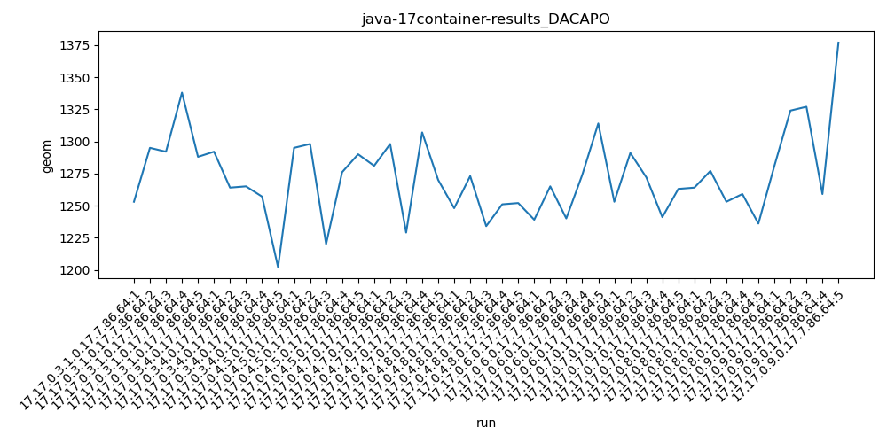
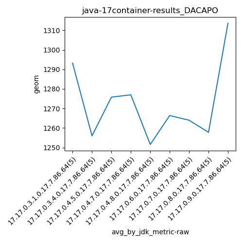
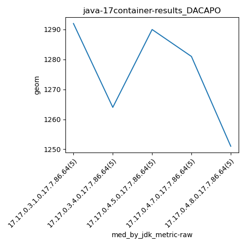
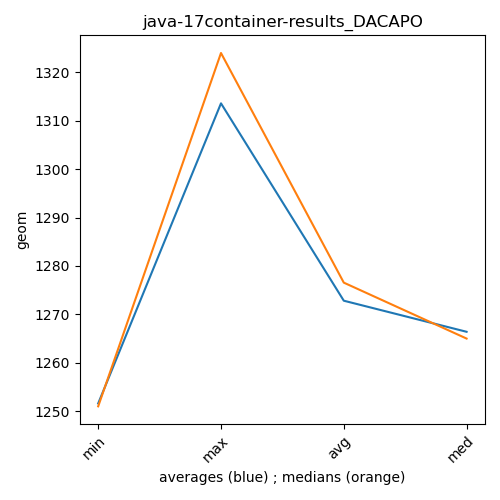

java-17 DACAPO
Context at bottom
/home/jvanek/git/benchmarks-in-nested-virtualisation-toolchain/final_results/container_results/container-results_J2DBENCH
java-17
DACAPO
/home/jvanek/git/benchmarks-in-nested-virtualisation-toolchain/final_results/container_results/container-results_RADARGUNs3
java-17
DACAPO
/home/jvanek/git/benchmarks-in-nested-virtualisation-toolchain/final_results/container_results/container-results_RADARGUNs1
java-17
DACAPO
/home/jvanek/git/benchmarks-in-nested-virtualisation-toolchain/final_results/container_results/container-results_DACAPO
java-17
DACAPO
container-results_DACAPO
final score
Expected number of java-17 JDKs: 9
1st avgmed_alljdks_metric:
/home/jvanek/git/benchmarks-in-nested-virtualisation-toolchain/final_results/result_processing.py /home/jvanek/git/benchmarks-in-nested-virtualisation-toolchain/final_results/container_results/container-results_DACAPO geom False
values: [1253, 1295, 1292, 1338, 1288, 1292, 1264, 1265, 1257, 1202, 1295, 1298, 1220, 1276, 1290, 1281, 1298, 1229, 1307, 1270, 1248, 1273, 1234, 1251, 1252, 1239, 1265, 1240, 1274, 1314, 1253, 1291, 1272, 1241, 1263, 1264, 1277, 1253, 1259, 1236, 1281, 1324, 1327, 1259, 1377]

Expected number of iterations: 5
final number of values: 45 out of 45
Pass rate: 100.0%
values: (1202, 1377, 1272.8222222222223, 1270)

** accuracy from all jdks and runs
more is better
MIN: 1202
MAX: 1377
AVG: 1272.8222222222223
MED: 1270
Relative differences 1:
MIN-MAX: 13.0 %
MIN-AVG: 6.0 %
MIN-MED: 5.0 %
MAX-MIN: -15.0 %
MAX-AVG: -8.0 %
MAX-MED: -8.0 %
AVG-MED: -0.0 %
stored to java-17.properties. sort | uniq that!
2nd avgmed_by_jdk_metric:
values: [1293.2, 1256.0, 1275.8, 1277.0, 1251.6, 1266.4, 1264.0, 1257.8, 1313.6]

values: [1292, 1264, 1290, 1281, 1251, 1265, 1263, 1259, 1324]

values: (1251.6, 1313.6, 1272.822222222222, 1266.4)
values: (1251, 1324, 1276.5555555555557, 1265)

** accuracy from all jdks where runs were avged
more is better
MIN: 1251.6
MAX: 1313.6
AVG: 1272.822222222222
MED: 1266.4
Relative differences 1:
MIN-MAX: 5.0 %
MIN-AVG: 2.0 %
MIN-MED: 1.0 %
MAX-MIN: -5.0 %
MAX-AVG: -3.0 %
MAX-MED: -4.0 %
AVG-MED: -1.0 %
stored to java-17.properties. sort | uniq that!
** accuracy from all jdks where runs were medianed
more is better
MIN: 1251
MAX: 1324
AVG: 1276.5555555555557
MED: 1265
Relative differences 1:
MIN-MAX: 6.0 %
MIN-AVG: 2.0 %
MIN-MED: 1.0 %
MAX-MIN: -6.0 %
MAX-AVG: -4.0 %
MAX-MED: -5.0 %
AVG-MED: -1.0 %
stored to java-17.properties. sort | uniq that!
/home/jvanek/git/benchmarks-in-nested-virtualisation-toolchain/final_results/container_results/container-results_SPECJBB
java-17
DACAPO
/home/jvanek/git/benchmarks-in-nested-virtualisation-toolchain/final_results/container_results/container-results_JMH
java-17
DACAPO
pass rates:
container-results_DACAPO=100.0%
Context:
- container_results
- DACAPO